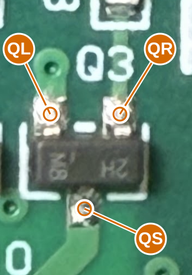

v0.9.31 · one component · six directional readings
Disconnect the battery and programmer. Use diode-test mode on the Fluke 179 or 87 III. Red probe = From; black probe = To. Report volts or OL, not resistance.
Only one transistor, Q3 beside R13 and C10. QL and QR are its two upper contacts; QS is its single lower contact. Probe the metal solder pads. Leave all components fitted for this first test.
Q3 next to R13 and C10

QL: Q3 upper-left paired pad in this photo
QR: Q3 upper-right paired pad, visibly fed by R13
QS: Q3 single lower pad, visibly continuing to C10
ID
Red probe
Black probe
Reading
B31
QL
QR
B32
QR
QL
B33
QL
QS
B34
QS
QL
B35
QR
QS
B36
QS
QR
PNP: two forward readings toward a common black-probe base. NPN: two forward readings away from a common red-probe base. In-circuit paths can obscure this; this first test cannot reliably distinguish collector and emitter.
Copy results
Worksheet only; nothing is sent automatically. Copy before closing.
What follows
Resolve hidden paths and device behavior - One Q3 diode batch next; R33 inventory and three local-only PIC branches remain explicit. Other checks are staged, not requested together.
Recover critical component values - 44 ceramic values; prioritize tuning and receiver after topology.
Finish interface and package mapping - LED channel/pad map and footprint; motor wire order. Exact physical fit is a later PCB qualification.
ERC: 1 retained U6/U6A output conflict. U6A is DNP; its regulator symbol remains by your request. Other source and library findings are resolved.